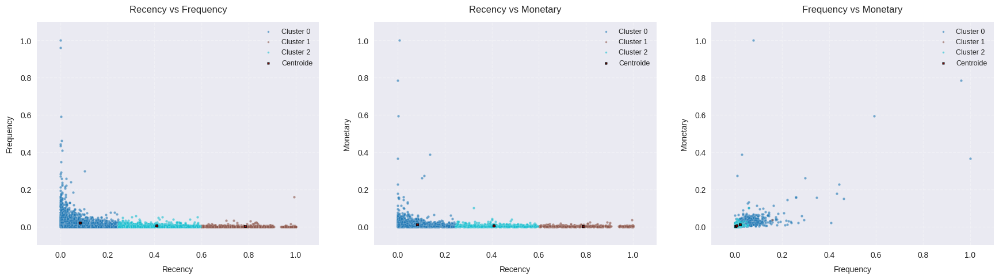
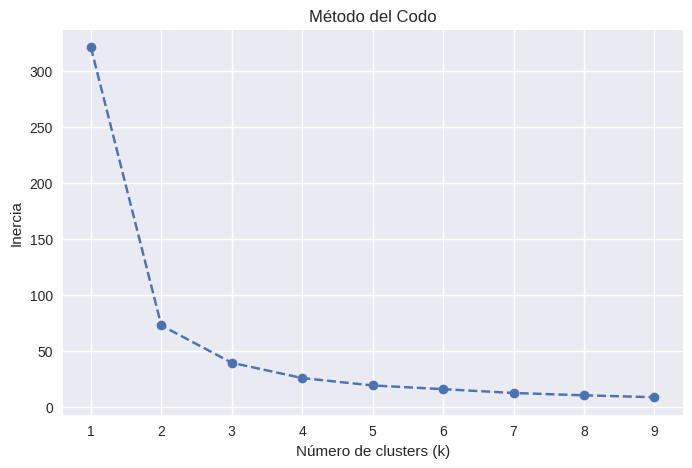

Sales transactions analysis to segment customers using unsupervised techniques (K-Means) based on RFM metrics (Recency, Frequency, Monetary).
MinMaxScaler directly without a log transform (e.g., np.log1p), extreme spenders compress the 0–1 range for typical buyers, causing Recency to dominate Euclidean distance calculations. In production customer analytics, applying a logarithmic transformation prior to scaling normalizes variances and yields more balanced, behaviourally distinct clusters.

You can explore all files, datasets and source code for this project: